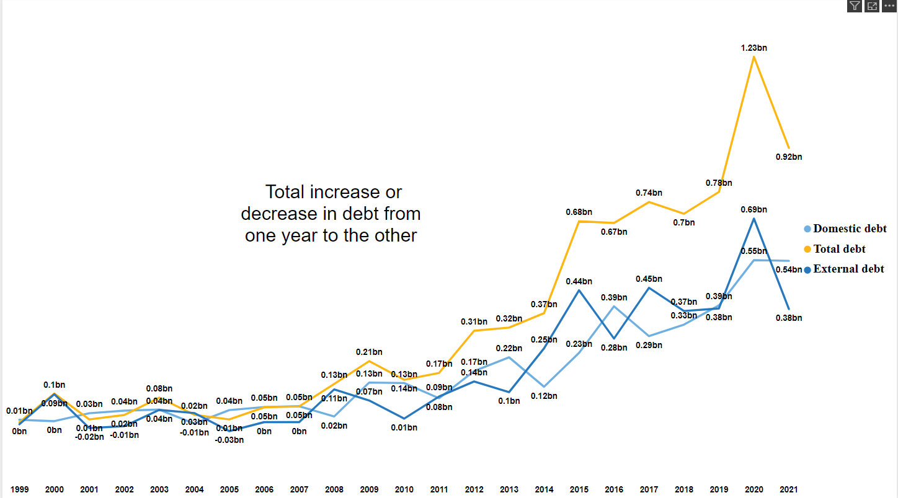
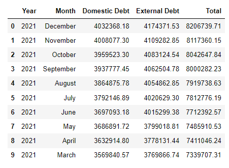
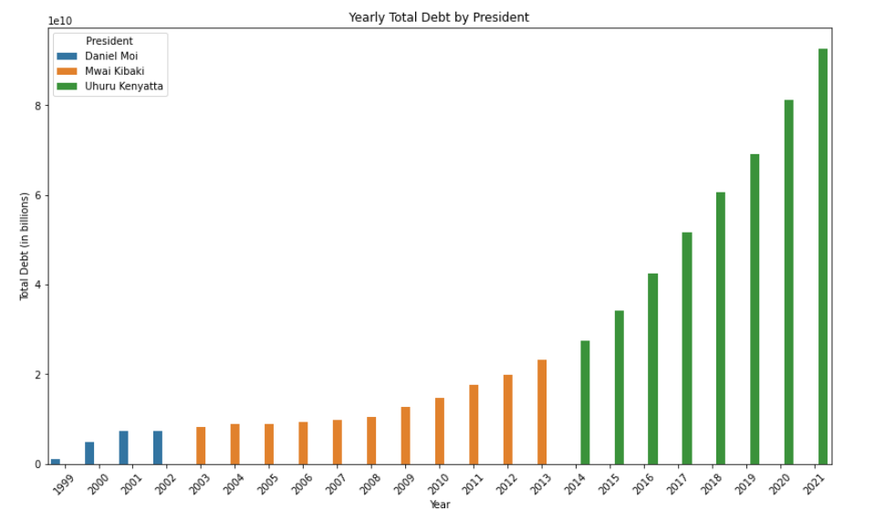
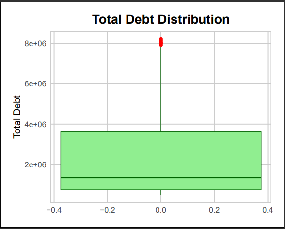
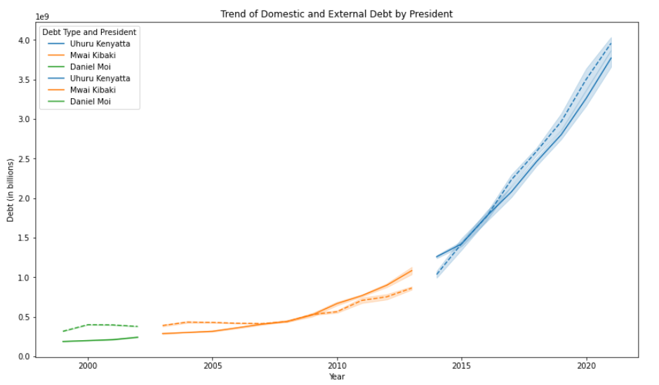
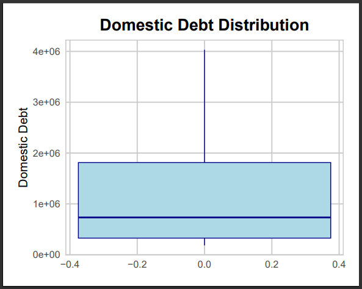
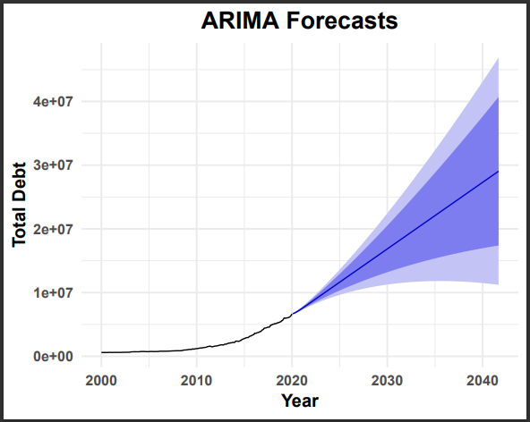
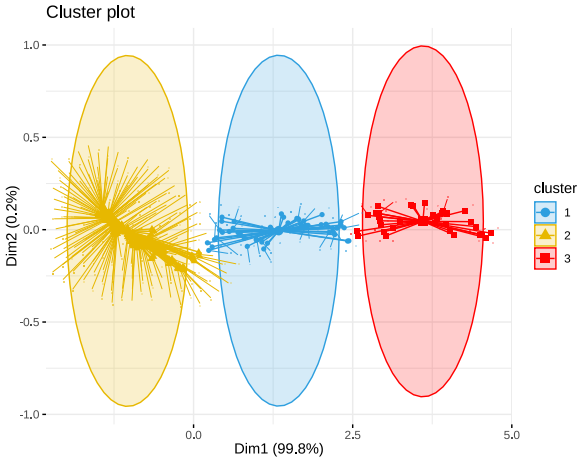

Understanding Kenya's Debt
Kenya has seen changes in its national debt over the years. Knowing
these trends helps everyone make better decisions about the economy.
This analysis covers data from 1999 to 2021, showing how debt has
changed during different presidents' terms.

Data Used
The data comes from the Central Bank of Kenya, but unfortunately we
only got data from 1999-2021, the data include fields like:
- Year: The year the debt was recorded.
- Month: The month the debt was recorded.
- Domestic Debt: Debt owed to local creditors.
-
External Debt: Debt owed to foreign creditors.
-
Total Debt: Sum of domestic and external debt.

Key Findings
The analysis shows significant increases in both domestic and external
debt over the years. Different presidents had different impacts on
debt levels:
-
Daniel Moi: Debt levels were relatively stable.
-
Mwai Kibaki: Debt started to grow, especially
towards the end of his term.
-
Uhuru Kenyatta: There was a sharp increase in debt.

Additional Findings
The analysis further reveals fluctuations and distribution patterns in
Kenya's debt:
-
Debt Distribution: The distribution analysis
indicates that most debt values are on the lower end, with
occasional high debt instances.
-
Outliers: The dataset contains outliers,
particularly in external debt and total debt, which significantly
impact the mean values.
-
Presidential Impact: Each president's term has
unique debt characteristics, reflecting their economic policies and
external factors.

Trend Analysis
The trend analysis highlights the overall rise in debt over the years
with notable periods of acceleration and deceleration. The significant
trends include:
-
2000-2007: Gradual increase in debt with stable
growth.
-
2008-2012: Noticeable uptick in debt, aligning with
global economic challenges.
-
2013-2021: Rapid debt accumulation, especially
under Uhuru Kenyatta's administration.

Debt Distribution by Type
The distribution analysis of domestic and external debt shows varying
patterns:
-
Domestic Debt: Generally stable with occasional
spikes.
-
External Debt: More volatile with significant
increases during certain periods.

Modeling: ARIMA and Cluster Analysis
ARIMA (AutoRegressive Integrated Moving Average)
ARIMA is a powerful tool used for time series forecasting. It helps in
predicting future values based on past data. In this analysis, ARIMA
models were used to forecast the trend of Kenya's national debt.
-
ARIMA Model Results: The ARIMA model indicated a
continuing upward trend in national debt, emphasizing the need for
effective debt management strategies.
-
Forecast Accuracy: The model's accuracy was
evaluated using historical data, showing a high level of reliability
in its predictions.

Cluster Analysis
Cluster analysis is used to group similar data points together. This
technique was applied to understand different periods with similar
debt characteristics.
-
Cluster Identification: The analysis identified
distinct clusters, each representing periods with unique debt
patterns.
-
Implications: Understanding these clusters helps in
identifying the underlying factors driving debt changes during
different periods.

Recommendations
Enhance Debt Transparency:
-
Ensure transparent reporting of debt data, including the terms of
loans and repayment schedules.
-
Establish an independent body to oversee debt management and
reporting.
Strengthen Debt Management:
-
Develop a comprehensive debt management strategy focused on
sustainability and economic growth.
-
Negotiate better terms for external loans to minimize interest costs
and extend repayment periods.
Promote Economic Diversification:
-
Invest in sectors with high growth potential, such as technology,
agriculture, and manufacturing, to create jobs and boost exports.
-
Encourage innovation and entrepreneurship to drive economic
diversification and resilience.
Enhance Public Financial Management:
-
Strengthen institutional capacities for better budget planning,
execution, and oversight.
-
Prioritize spending on critical infrastructure and social services
while curbing non-essential expenditures.
Conclusion
The analysis underscores the importance of a balanced and strategic
approach to managing Kenya's national debt. By enhancing debt
management frameworks, optimizing borrowing strategies, stimulating
economic growth, and rationalizing expenditures, the government can
achieve sustainable debt levels and foster long-term economic
stability. President William Ruto's administration should prioritize
these recommendations to ensure a healthy economic future for Kenya.
The continuous rise in debt highlights the importance of careful debt
management. Understanding these trends helps in making informed
decisions for Kenya's financial future.